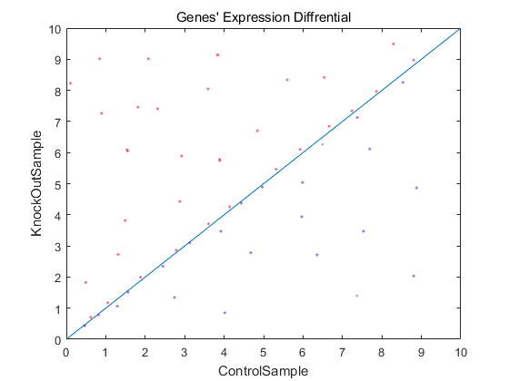

2. Functional-requirements¶
2.1. Input:¶
A gene expression file that is effectively submitted has the following format. It is a plain text file separated by tabs separated by three columns (see attached files for complete samples). The file contains an optional head line, followed by the expression of each gene in a controlled sample (such as a control sample) and a treatment sample (for example, a KokOutSt sample).
| gene_id | ControlSample | KnockOutSample |
|---|---|---|
| AT1G01010 | 1.198558083 | 2.036161827 |
| AT1G01020 | 13.75736234 | 13.370796 |
| AT1G01030 | 0.833779536 | 0.203616183 |
| AT1G01040 | 9.58846466 | 7.126566394 |
| AT1G01046 | 0 | 0 |
| AT1G01050 | 23.81482799 | 21.10821094 |
| AT1G01060 | 0.625334652 | 1.221697096 |
| AT1G01070 | 1.719670292 | 0.950208853 |
| AT1G01080 | 28.34850421 | 25.24840665 |
| AT1G01090 | 58.26034505 | 42.96301455 |
| AT1G01100 | 1066.508249 | 1308.030358 |
| AT1G01110 | 2.709783491 | 1.425313279 |
2.2. Output:¶
The web application displays a table and a scatter plot given a gene expression file.
The table contains a list of differentially expressed genes with the following format:
| gene_id | ControlSample | KnockOutSample | log_2[FC] |
|---|---|---|---|
| AT1G01010 | 1.198558083 | 2.036161827 | 0.76 |
The scatter plot displays differentially expressed genes. The X-axis is Control, and Y-axis is Treatment. Replace ‘Control’ and ‘Treatment’ with appropriated column names if provided in the uploaded file.
The up-regulated genes are shown in red dots, and down-regulated genes are shown in blue.
